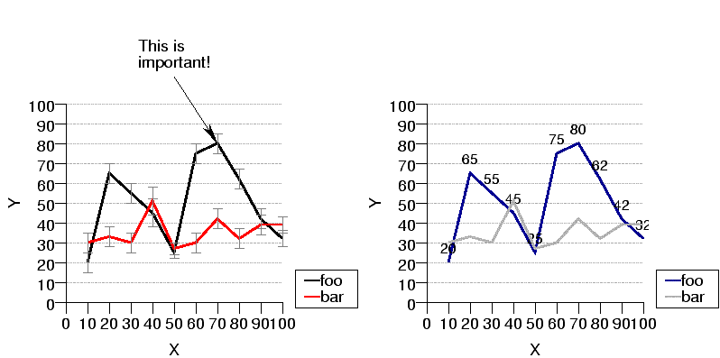

| PyChart |
| PyChart |

Sample line plot
Below is the source code that produces the above chart. ../demos/linetest3.py
from pychart import * theme.get_options() data = chart_data.read_csv("lines.csv") xaxis=axis.X(label="X", tic_interval=10) yaxis=axis.Y(label="Y", tic_interval=10) ar = area.T(x_range=(0,100), y_range=(0,100), x_axis=xaxis, y_axis=yaxis) eb = error_bar.error_bar2(tic_len=5, hline_style=line_style.gray50) ar.add_plot(line_plot.T(label="foo", data=data, error_bar=eb, y_error_minus_col=3), line_plot.T(label="bar", data=data, ycol=2, error_bar=eb, y_error_minus_col=3)) ar.draw() tb = text_box.T(loc=(40, 130), text="This is\nimportant!", line_style=None) tb.add_arrow((ar.x_pos(data[6][0]), ar.y_pos(data[6][1])), "cb") tb.draw() ar = area.T(loc=(200, 0), x_range=(0,100), y_range=(0,100), x_axis=xaxis, y_axis=yaxis, legend=legend.T()) ar.add_plot(line_plot.T(label="foo", data=data, data_label_format="/8{}%d"), line_plot.T(label="bar", data=data, ycol=2)) ar.draw()
Sample scatter plot
Below is the source code that produces the above chart. ../demos/scattertest.py
from pychart import *
import random
random.seed(0)
def randomdata():
data = []
for i in range(0, 30):
data.append((random.random() * 1000, random.random() * 1000))
return data
theme.get_options()
chart_object.set_defaults(line_plot.T, line_style=None)
tick1 = tick_mark.Circle(size=2)
tick2 = tick_mark.Circle(size=2, fill_style=fill_style.black)
xaxis = axis.X(label="foo", format="/a-60{}%d")
yaxis = axis.Y(label="bar")
ar = area.T(x_axis=xaxis, y_axis=yaxis,
x_grid_interval=100, x_grid_style=line_style.gray70_dash3,
legend = legend.T(loc=(350, 50)), loc = (0, 0))
ar.add_plot(line_plot.T(label="plot1", data=randomdata(), tick_mark=tick1))
ar.add_plot(line_plot.T(label="plot2", data=randomdata(), tick_mark=tick2))
ar.draw()
xaxis = axis.X(label="foo", format="/a-30{}%d")
yaxis = axis.Y(label="bar")
ar = area.T(x_axis=xaxis, y_axis=yaxis,
x_coord=log_coord.T(), y_coord=log_coord.T(), loc = (200, 0),
legend = None)
ar.add_plot(line_plot.T(label="plot1", data=randomdata(), tick_mark=tick1))
ar.add_plot(line_plot.T(label="plot2", data=randomdata(), tick_mark=tick2))
ar.draw()
Specifies the data points. See Section 5
The format string for the label printed beside a sample point. It can be a `printf' style format string, or a two-parameter function that takes the (x, y) values and returns a string. The appearance of the string produced here can be controlled using escape sequences. See Section 17
The location of data labels relative to the sample point. Meaningful only when data_label_format != None.
The style of the error bar. See Section 9.2
The label to be displayed in the legend. See Section 6.3, See Section 17
The style of the line.
Tick marks to be displayed at each sample point. See Section 9.1
The column, within attribute "data", from which the X values of sample points are extracted. See Section 5
The column (within "data") from which the depth of the errorbar is extracted. Meaningful only when error_bar != None. See Section 9.2
The column (within "data") from which the height of the errorbar is extracted. Meaningful only when error_bar != None. See Section 9.2
See Section 9.2
See Section 9.2
The column, within attribute "data", from which the Y values of sample points are extracted. See Section 5
| PyChart |